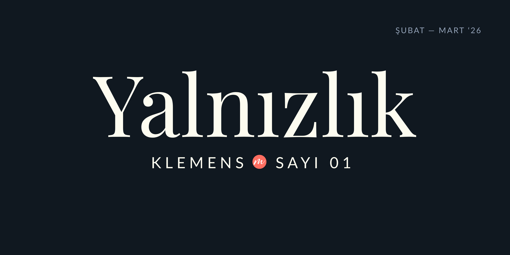

“Değeri bilmeden yalnızlığından kurtulmak istiyorsan;
kurtulsan da yalnızsın.”
— Aziz Nesin
Sevgili Okuyucumuz,
İlk sayımızda sizi karşılamanın heyecanı içerisindeyiz.
Klemens Bülten olarak ekibimiz, gönüllü yazar ve editörlerden oluşmakta. Başlangıç için, hep birlikte düşündük taşındık ve ilk sayımızda, kış soğuklarını uğurlamak üzere, “yalnızlık” temasını seçtik.
Kendi perspektiflerimize bir prizma tutar gibi, değişip dönüşen fikirlerle karşınızdayız. Bazen bir bağ, bazen bir sığınak, bazen öyküsüzlük; biraz kozmik, biraz da etimolojik olarak karşılayacak yalnızlık sizi burada.
Fotoğraf karelerinden tablolara; müzelerden mimariye, şiirlerden tiyatro oyunlarına… Kapsayıcılık ve güvenli alan gözettiğimiz bültenimizde, dileriz ki her bir kelime bizim kalplerimizden sizinkine bir yol olur.
Umarız hiçbir okuyucumuz kendi yalnızlığının bahsini göremeyip hüzünlenmez ya da yalnızlığını yalnız bıraktığımızı düşünmez; sizin yalnızlıklarınız da bizim için buradaki her kelimeye dahil.
Şimdiden keyifli okumalar!
Klemens ekibi adına,
Defne Ege Durucu
| ODAK |
Bütünlüğün BüyüsüYalnızlık ile tek başına olmak arasındaki fark nedir? Hamlet'ten Georgia O'Keeffe'ye uzanan bu sanat yolculuğunda, yalnızlığın yaratıcı gücünü keşfedin. Devamını oku (...) Yazan: Defne Ege Durucu |

|
Yalnız ÇerçeveDönüp baktığımızda, o anın içinde olanların hikayesini bizden başka bilen var mı? Eğer bir hikayeyi kimse hatırlamıyorsa, o an mı yalnız kalmıştır; yoksa fotoğrafın kendisi mi? Devamını oku (...) Yazan: Barış Arslan |

|
Dijital Aşk ve Modern Yalnızlık: HerDijital çağda, bir yapay zeka ile insan arasında filizlenen bedensiz bir aşk. Bağ kurmanın anlamını, dokunmanın yerini ve 'gerçek' olanın sınırlarını sorgulayan bir film analizi. Devamını oku (...) Yazan: Sevim Aydın |

|
İzler ve Bağlar ÜzerineHer birimiz yalnız hissettik elbette zaman zaman, ancak gerçekten de fiilî olarak yalnız olduk mu hiç? Varlığımızı başkalarıyla kurduğumuz bağlar ve bıraktığımız izlerle sürdürdük. Devamını oku (...) Yazan: Gözde Murt |

|
Yalnız Kadın, Yalnızlaştırılan KadınlarYüzyıllardan beri gelen kadına yönelik şiddetlerin hepsi kadınları her dönem yalnızlaştırdı. Yaşadıklarını bırakın çevrelerine, kendilerine bile zor anlatır hale getirdi. Devamını oku (...) Yazan: Doğa Uğurel |

|
Yeni Çağın Yalnızlık AğıYapay zeka çağı ve her birimizi içine alan görünmez ağ… Bu ağın bizi birbirimize bağlaması gerekmez miydi? Oysa yalnızlık arttıkça yapay zekaya sığınıyoruz. Devamını oku (...) Yazan: Gizem Dinç |

|
Yalnızlık İstikameti: Rota Yeniden OluşturuluyorKendimizi karşımıza alıp kaçmadan göçmeden bir soralım: Ben bu yalnızlığın neresindeyim? Belki yalnızlığımız bizim için bağımsızlık, özgürlük ve denge demek. Devamını oku (...) Yazan: Melis Terzi |

|
Kozmik Yalnızlığın Başlangıcı: Kopernik DevrimiKopernik'in evrenin merkezini yerinden oynatan devrimi, yalnızca astronomiyi değil; insanın kendini anlama biçimini ve sanatın görme biçimlerini de değiştirdi. Devamını oku (...) Yazan: Zeynep Aydın |

|
| KÜLTÜR & SANAT |
Artemisia Gentileschi: Bedenin Hafızası, Yalnızlığı ve Fırçanın Direnişiİki erkek, bir kadın ve ortada kapanmayan bir mesafe. Susanna kalabalığın içindedir ama yalnızdır. Çünkü kimse onun baktığı yerden bakmaz. Devamını oku (...) Yazan: Didem Kazan Sol |

|
Mari Gerekmezyan: Bir Kadının Tuvale İşlenmiş İzleriMüzenin sessiz salonunda bu resme bakarken, Bedri Rahmi Eyüboğlu'nun büyük aşkı Mari Gerekmezyan'ı düşündüm. Karşımda duran kadın figürü sadece bir model değildi. Devamını oku (...) Yazan: Gizem Karakaya Şeberoğlu |

|
Korkuyu Beklerken Boşluk İlerliyorOğuz Atay'ın 'Korkuyu Beklerken' öyküsünden sızan tekinsiz atmosfer, Leyla Ersen Kılınçkaya'nın yerleştirmeleriyle eski bir banka kasasında hayat buluyor. Devamını oku (...) Yazan: Aslı Alpar |

|
Kalabalıklar Çağında Müze ve YalnızlıkEstetik hazzın galip gelemediği bir çeşit yabancılaşma hali; toplum içinde yalnız hissetme duygusunu en çok müzeleri gezerken deneyimlerim. Devamını oku (...) Yazan: Hülya Utkuluer |

|
Şiddetin Cinsiyeti ve Medea'nın İntikamıBüyük bir çıkmazın içinde buluyor kendini Medea. Kaybettiklerini geri almanın hiçbir yolu yok. Medea yapayalnız ve çok öfkeli. Devamını oku (...) Yazan: Melis Terzi |

|
Zamansız Bir Metin, Güncel Bir Yalnızlık: Satıcının ÖlümüYalnızlık, oyunda fiziksel bir izolasyondan çok, anlaşılmama ve duyulmama hali olarak karşımıza çıkar. Willy'nin sesi vardır, ancak karşılığı yoktur. Devamını oku (...) Yazan: Ebru Berra Alkan |

|
Konuşma Devam EdiyorDon Juan'ın en ayırt edici yanı, anlattığı hikaye değil, konuşma biçimidir. Anlatıcı, sahnenin ortasında durur; okurla konuşur, söz keser, yön değiştirir. Devamını oku (...) Yazan: Cansu Kul |

|
| KENT & YAŞAM |
Modern Kentin Sessiz Çığlığı: Edward Hopper ve Yalnızlığın EstetiğiEdward Hopper'ın resimleri, modern kentin vaat ettiği hareket ve özgürlük duygusunun ardındaki derin yalnızlığı görünür kılar. Devamını oku (...) Yazan: Mehtap Kurt |

|
İstanbul'da Kendime Ait Bir Oda: Beyoğluİstanbul'da en sevdiğim, kendimi ait hissettiğim semt Beyoğlu olmuştur. Belki eski İstanbul'un ruhunu hala içinde sakladığındandır. Devamını oku (...) Yazan: Ecem Civaş |

|
İzmir'in Locus Amoenus'uİzmir Kültürpark'ın tarihsel dönüşümü, Büyük Yangın sonrası yeniden doğuşu ve günümüzde kentsel ısı adasına karşı oynadığı kritik ekolojik rol. Devamını oku (...) Yazan: Ezel Evin Altındağ |

|
Tüm yazıları keşfetmek için
TÜM İÇERİKLERİ GÖRKLEMENS ART
Ankara, Türkiye
Instagram · YouTube · X · LinkedIn
Bu e-postayı klemensart.com üzerinden abone olduğunuz için alıyorsunuz.
Abonelikten çıkmak için tıklayın